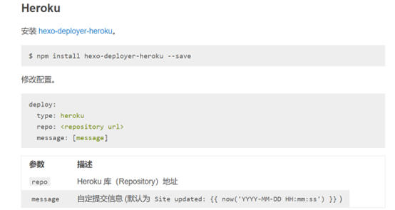

记录自己的初次搭建博客的经历——流程、路径与感悟
安装流程可以参见 这篇文章
部署时尤其需要注意的设置：将hexo设置里面的分支名称改成与GitHub一致，因为前两年GitHub把main branch名字改了..
1.网站部署的原理和逻辑是什么？
在最开始，面对各种搭建网站的框架，本人其实是迷茫的，因为我一时间无法理解为什么经过这些步骤就能够产出一个可以被访问的页面？
直到我在站点快搭建完成时，我才突然明白其原理，或许接下来的要说理解有点不准确，但是仍然在这里记录一下：
- 首先，需要理解的就是，网络上所有的资源都是以二进制的方式传输的，网站也是这样，传输的是010101的数据流，而不是直接将页面呈现在电脑上。数据在经过网络传输至本地的时候，需要本地利用某种“解码软件”将其转换成更高级的、便于用户阅读、输入的模式。浏览器其实就是将01数据解析成html等代码，然后再通过渲染、代码执行，将数据以GUI的形式呈现出来的解析器。
- 那么，为什么可以将页面文件夹的一整个数据包托管至某个服务器，从而能够对外可见呢？在GitHub中，如果你建立一个仓库，并将网站数据上传至仓库，利用GitHub Pages功能就可以将个人博客发布在互联网上。实际上，通过给仓库开通Pages功能，在输入 “用户名.github.io“ 时，你实际访问的是GitHub页面下你仓库的地址（这么说不知道对不对？），然后GitHub在你访问的时候，会检查仓库中是否有index.html这一个文件，如果有，则告诉浏览器，让浏览器解析仓库内的数据资源，从而使得页面能够呈现出来。
- 为什么是index.html？因为其是所有网站建设者约定俗成的一个最初始的入口文件，就好像python包中的__init__.py一样。
- 在理清上述逻辑之后，那么我们就可以理解到一个事实：站点部署在哪里都是无所谓的，只要站点托管的地方能够提供这样一种”判断” “解析”的服务即可，自己的电脑也可以作为server。只是PC经常保持不在线的状态，会影响用户访问。所以购买一个专门负责发送数据的服务器成为网站搭建的必要步骤，这种服务器专门处理访问网站的请求，效率上相对于PC高得多。
2.站点部署在哪？
Github Pages，部署在这里的原因有两个：一是免费，二是顺带学习一下Github的用法
部署在这也有缺点，那就是国内访问不稳定
3.部署步骤？
- git工具的安装、npm安装、Node.js安装（？）
Node.js和npm分别是什么？————问问chatGPT吧！ - 使用git将本地电脑与GitHub账户绑定
- 创建一个Github仓库，命名格式严格要求为：用户名.github.io
- 使用git命令行，将本地电脑的某个地址与github仓库关联，这个地址即是博客的文件所在，我命名为Blog
- 在Blog下，用git bash安装Hexo
- 使用Hexo命令，创建、测试、部署
4.主题个性化修改
- 选择一个主题并根据github上面提供的主题使用方法进行配置，此步骤git命令往往是在Blog这个根目录下进行
- 主题目录参见Hexo主题官方集合
- 经过一系列尝试，最终使用butterfly主题
- 个性化设置参见butterfly官方文档集，这是创作者的博客，博文全是详细的设置如何调整
5.博文上传与修改
- 需要注意的是，Hexo框架才是个人博客的架构，博客发表、修改等应该使用Hexo命令来执行
- butterfly只是一个美化的框架，负责显示效果的渲染和调整
- 使用hexo命令创建新博文后，在source文件夹下可以找到。博文需要以md格式写作，本人使用VScode编写
- md语法写作规范：Markdown官方教程
6.过程中踩过的坑
仓库中README.md文件，在depoly后一直被顶替，仓库页面显示不出md的描述来
这个问题是Hexo的设置问题，不知道官方文档有没有提到，但是解决方法是：在Hexo目录下的source根目录下添加一个README.md。修改Hexo目录下的_config.yml。将skip_render参数的值设置上。skip_render: README.md保存退出即可。使用hexo d 命令就不会在渲染 README.md 这个文件了。
无法在仓库中手动添加README.md,因为部署时候会将仓库内容完全顶替为本地内容，只有在本地文件中也设置README才行。
网站在本地测试渲染失败
可能是缺少相应的包，重新安装一遍即可，如果不确定，就从头都试一下
通常而言，应该安装的包有：Hexo所需的包+所用主题渲染所需的包
引出一个问题：包的作用是什么？
- 主题包：hexo-theme-fluid 是加入主题
- 渲染包：hexo-renderer-scss 是加入渲染引擎，因为Hexo里面可能并不支持主题内的一些样式
又引出一个问题：为什么不支持？Hexo究竟是什么？
本人尚未了解，但是可以参见Hexo官方文档
网站本地测试成功，部署到GitHub后远程渲染失败？
按F12，查看console，发现报错是Failed to load resource: the server responded with a status of 404 ()
原因在于国内与GitHub的连接犯抽……..一些文件没下载回来因而无法加载
因为这个错误换了好多主题….本来其他主题也蛮漂亮的唉…
但是新页面还有问题，可能在我不知道的地方起了作用，尽管显示没有问题：
Error with Permissions-Policy header: Origin trial controlled feature not enabled: ‘interest-cohort’.
其实在途中还遇到一个错误，稀里糊涂就没有了。
7.后续考虑加入的功能
博客定时自动更新
很简单，没搞是因为没必要，学习是需要时间的，不需要频繁更新…….

动态页面
真正理解Hexo的底层原理
8.一些感想
- 在配置过程中遇到过很多报错、和不了解的地方，直接搜索报错结果固然可以找到解决方法，但是很多可以查阅官方文档来解决。查阅固然快，但往往会使得”知其然而不知其所以然”。直接搜答案的过程和询问chatGPT很类似，工程性的问题只答复解决步骤，而不分析背后原理
- Hexo也许是一套程序，自动提供一套框架，功能是将我们提交的文本，按照模板或者自己设定的样子渲染出来。同样功能的还要jekell，但是好像是Linux上比较好用。Hexo是静态网页框架，对于博客够用，但是动态网页框架才是未来的选择。
- 在编写md的时候还误用了中文符号导致md语法出错…….wssb
- 部署后发现页面没更新？刷新试试！再不然就开梯子刷新试试！
- 原来写正文的时候不用自动换行….否则会突然换行，很难看..
- Markdown语法：加粗这类修饰语法，前后如果有标点符号，则要视情况加空格……
- 每次更新，clean、g、d三条命令必须走一趟啊….我还以为用更新用g、d就行了呢
- bolg内插入图片失败…解决方法是这篇博客